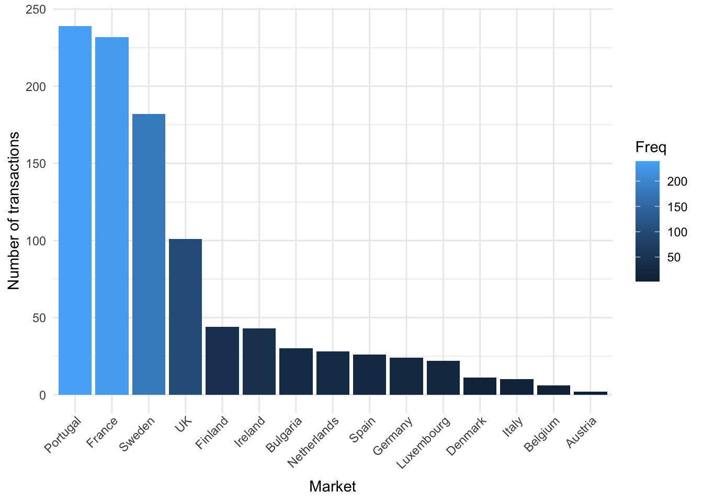
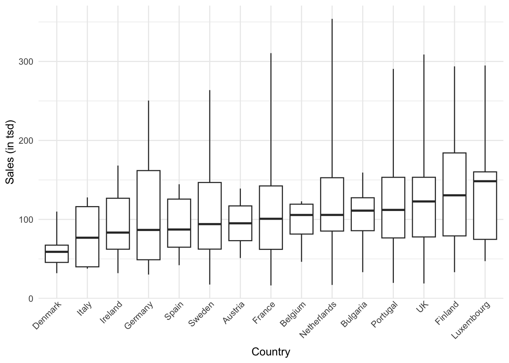

9 Assignments: Solutions
9.1 Assignment 1
This is the technical solution for the first assignment (i.e., it does not include any interpretations while your solutions should have some for each task). Also, plase note that there are multiple possible ways of solving the assignment.
9.1.1 Load data
library(tidyverse)
library(magrittr)
sales_data <- read.csv2("https://raw.githubusercontent.com/WU-RDS/RMA2024/main/data/Sales-2019-2020_A1.csv",
sep = ",", header = TRUE)
sales_data %<>%
mutate(date = as.Date(date, format = "%m/%d/%Y"))
sales_data$year <- format(sales_data$date, "%Y")
sales_data$order_value_EUR <- str_remove(sales_data$order_value_EUR,
",")
str(sales_data)## 'data.frame': 1000 obs. of 11 variables:
## $ country : chr "Sweden" "Finland" "Portugal" "Portugal" ...
## $ order_value_EUR: chr "17524.02" "116563.40" "296465.56" "74532.02" ...
## $ cost : chr "14122.61" "92807.78" "257480.34" "59752.32" ...
## $ date : Date, format: "2020-02-12" "2019-09-26" ...
## $ category : chr "Books" "Games" "Clothing" "Beauty" ...
## $ customer_name : chr "Goldner-Dibbert" "Hilll-Vandervort" "Larkin-Collier" "Hessel-Stiedemann" ...
## $ sales_manager : chr "Maxie Marrow" "Hube Corey" "Celine Tumasian" "Celine Tumasian" ...
## $ sales_rep : chr "Madelon Bront" "Wat Bowkley" "Smitty Culverhouse" "Aurelie Wren" ...
## $ device_type : chr "Mobile" "Mobile" "PC" "PC" ...
## $ order_id : chr "70-0511466" "28-6585323" "58-7703341" "14-6700183" ...
## $ year : chr "2020" "2019" "2019" "2020" ...First, you should check the data and make sure all variables are recorded correctly (correct variable types). From the output above you can see that order_value_EUR and cost, which are measured in ratio scales, are not numeric. Hence, you need to fix this:
sales_data$order_value_EUR = as.numeric(sales_data$order_value_EUR)
sales_data$cost = as.numeric(sales_data$cost)
head(sales_data, 2)9.1.2 Q1
To solve the first task of Question 1, ypu could simply use the table() and arrange() functions. By storing the table as data frame, you allow for using it in the bar plot as well:
ggplot(prop, aes(x = Var1, y = Freq)) + geom_col(aes(x = fct_reorder(Var1,
-Freq), fill = Freq)) + ylab("Number of transactions") +
xlab("Market") + theme_minimal() + theme(axis.text.x = element_text(angle = 45,
vjust = 1.1, hjust = 1))
For the next task, it was enough to use conditional frequencies by year (because this way, the audience sees the dynamics of transactions shares between markets in Y1 and Y2), or you could show the percentage changes for each market from Y1 to Y2.
## year
## country 2019 2020
## Austria 0.0 0.4
## Belgium 0.4 0.8
## Bulgaria 3.1 2.9
## Denmark 0.8 1.4
## Finland 4.5 4.3
## France 26.1 20.4
## Germany 2.2 2.5
## Ireland 3.1 5.5
## Italy 0.8 1.2
## Luxembourg 2.7 1.8
## Netherlands 2.2 3.3
## Portugal 21.0 26.7
## Spain 3.1 2.2
## Sweden 19.2 17.3
## UK 10.8 9.49.1.3 Q2
In this task, you should simply perform grouping and summarizing. The only difference is, in task 1, you only needed one grouping variable (year), while in task 2, you had to use country as well.
s1 <- sales_data %>% group_by(year) %>% summarize(annual_revenue = sum(order_value_EUR), avg_revenue = mean(order_value_EUR))
s1s2 <- sales_data %>% group_by(country, year) %>% summarize(annual_revenue = sum(order_value_EUR), avg_revenue = mean(order_value_EUR))
s2 <- as.data.frame(s2)
s2sales_data %>% filter(year == 2020) %>% group_by(country) %>%
ggplot(aes(x = fct_reorder(country, order_value_EUR),
y = order_value_EUR/1000)) + # to have nicely readable axis points
geom_boxplot(coef = 3) + labs(x = "Country",
y = "Sales (in tsd)") + theme_minimal() +
theme(axis.text.x = element_text(angle = 45, vjust = 1.1,
hjust = 1), plot.title = element_text(hjust = 0.5,
color = "#666666"), legend.position = "none")
9.1.4 Q3
Here are the two ways to solve Question 3: one with mutate() and another with summarize(). You can see that the second way is slightly more parsimonious.
Reminder: ROI is calculated as (( total revenue - total cost) / total cost ) * 100.
roi_mut <- sales_data %>%
group_by(country) %>%
mutate(roi_index = (sum(order_value_EUR) - sum(cost))/sum(cost) *
100) %>%
arrange(desc(roi_index)) %>%
select(country, roi_index) %>%
unique()
roi_mutroi_sum <- sales_data %>%
group_by(country) %>%
summarize(roi_index = (sum(order_value_EUR) - sum(cost))/sum(cost) *
100) %>%
arrange(desc(roi_index))
roi_sum9.1.5 Q4
This task is quite similar to the prevoius one and could be solved the same way:
categories <- sales_data %>%
group_by(category) %>%
mutate(profit = (sum(order_value_EUR) - sum(cost))) %>%
arrange(desc(profit)) %>%
select(category, profit) %>%
unique() %>%
head(5) # could also be done with summarize() like in the previous task
categories9.1.6 Q5
The tricky part in this task could be with “share of sales” - remember that share of sales is a share of revenue, gained by the device type, against the total revenue. This is not counting (i.e., prop.table() would not be the right way to solve this). Instead, you should use the sums of revenues per device type to obtain the shares:
device_sales <- sales_data %>%
group_by(device_type) %>%
summarise(sales = sum(order_value_EUR))
device_sales %>%
mutate(share_of_sales_percentage = round(sales/sum(sales),
4) * 100)